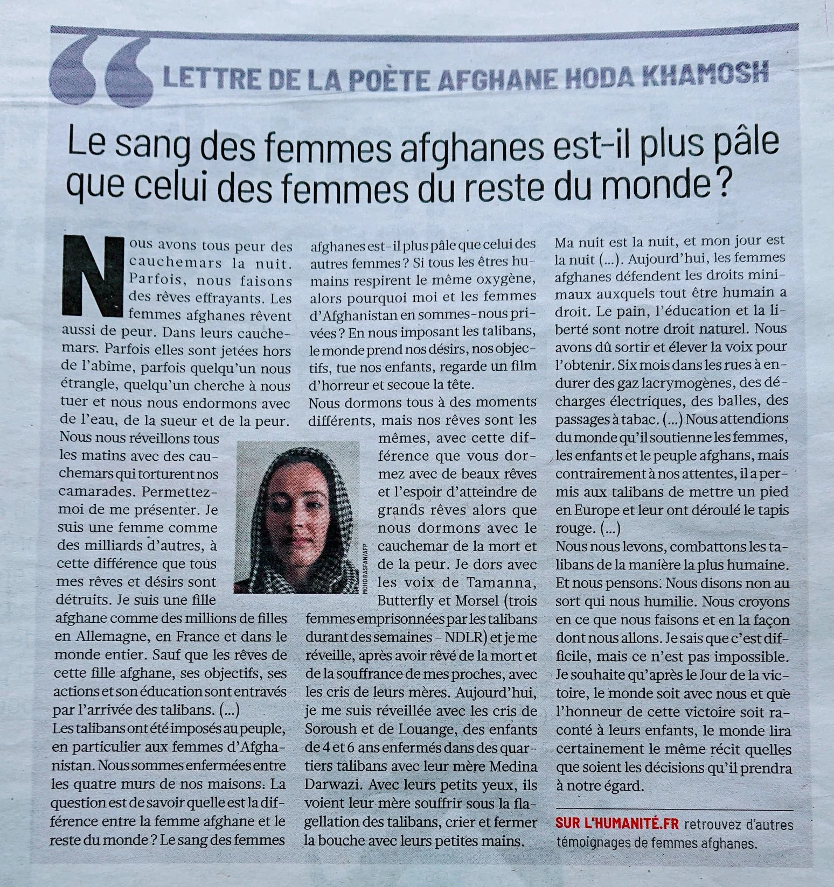

Publication d’archives
Retrouvez d'autres témoignages de femmes afghanes sur L’HUMANITÉ.FR
Date indiquée par Facebook · 8 mars 2022
Texte conservé avec la publication
Contexte du dossier
Début mars 2022, le PCF 79 invite des organisations syndicales, associatives et politiques à rejoindre un rassemblement pour la paix à Niort. La rencontre est annoncée le 4 mars, en bas de la Brèche. Le programme prévoit de courtes interventions des organisations, une minute de silence, une lecture de Prévert et une chanson de Jean Ferrat. Les organisateurs demandent que les prises de parole restent centrées sur la paix et le refus de l’escalade. Le programme donne une idée de l’événement préparé, dont il ne constitue pas le compte rendu.
Quatre jours plus tard, la page fédérale renvoie aux témoignages de femmes afghanes publiés par L’Humanité. Ce relais éclaire une autre manière de faire circuler une parole venue d’ailleurs. Les témoignages restent ceux des femmes et du journal qui les publie.

Sources
Archive rouge · export Facebook · AR-0002-FB-01935